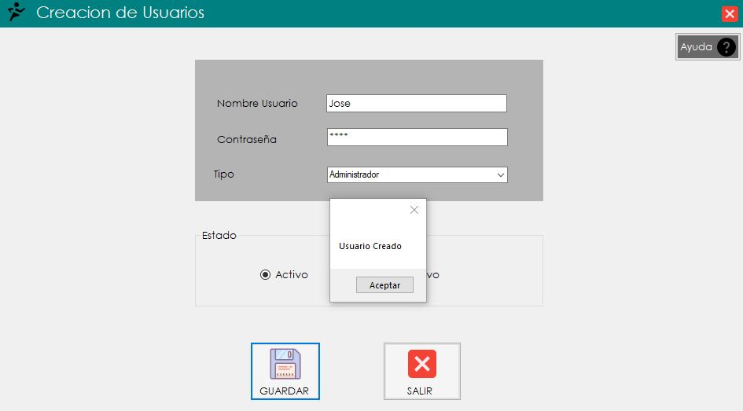

Creacion de Usuarios
1. Ingresando al formulario de Creacion de Usuarios:
2. Al ingresar al formulario se ingresan los datos del nombre de usuario y de contraseña.
Todos los campos deben ser llenados para el correcto funcionamiento del formulario
3. Se selecciona el tipo de usuario que va a ser si Administrador,Empleado o Entrenador.
4. Se selecciona la opcion si va a estar activo o inactivo el usuario.
5. Se da click en el boton de guardar para terminar el proceso de creacion de usuario.
